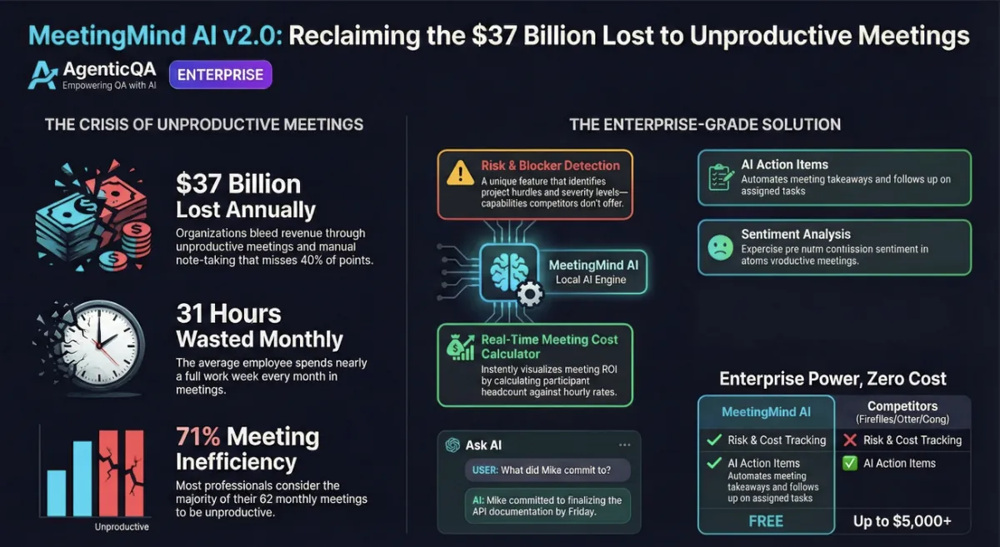

01
Write reliable tests
Use resilient locators, auto-waiting and web-first assertions to write tests that do not flake.
Agentic QA is a beginner-friendly, live course that takes you from your first test to a real Page Object Model framework — with the SDET skills teams hire for.
Fees and current discounts are shared on a quick call. Request a call → or email ganesh@agenticqa.io
Each live class is 90 minutes: 60 minutes of teaching followed by 30 minutes of guided hands-on work, so you leave every session having written real code.
Testing basics, setup from scratch, the JavaScript / TypeScript you actually need.
Locators, auto-waiting, assertions, fixtures, traces and debugging.
Page Object Model, BDD, reports, CI/CD and flaky-test handling.
Build a complete framework from an empty folder and present it.
30 days of live classes + 5 capstone days.
Use resilient locators, auto-waiting and web-first assertions to write tests that do not flake.
Structure a maintainable framework with the Page Object Model, fixtures and clean test data.
Read traces, screenshots and videos to find root causes quickly instead of guessing.
Run tests in parallel on GitHub Actions and publish HTML / Allure reports.
Express behaviour in Gherkin (Given / When / Then) that the whole team can read.
Practise common automation interview questions and demo your capstone with confidence.
Every topic ends with common mistakes to avoid, an exercise and a short quiz. See the detailed syllabus →
AI QA Architect · LLM & Agent Evaluation · AI-Native QA (Playwright / RAG / MCP / API) · AI Trainer
Founder, Agentic QA Technologies · Bengaluru
Ganesh architects AI-native QA automation with Playwright, TypeScript, Python, RAG and MCP servers. Before founding Agentic QA Technologies he led QA teams and test strategy as a QA Manager, built Selenium automation suites that cut regression testing time by 80%, and worked as a test lead and automation engineer at product and services companies. He teaches every live class personally.
MCA, Bharathidasan University · B.Sc. Mathematics, University of Madras
Resume analysis and improvement suggestions powered by LLM feedback.
Ask questions over large PDFs with a retrieval-augmented study assistant.
Batch sentiment analysis of customer reviews for product teams.

AI meeting assistant project.
No. The course starts from zero and teaches the JavaScript / TypeScript you need as you go.
30 days of live classes plus 5 capstone days. Each class is 90 minutes — 60 minutes teaching and 30 minutes hands-on.
Classes are taught live by Ganesh, with hands-on practice in every session.
Any ordinary laptop that can run a modern browser and Node.js. No GPU required.
No course can promise that. You will leave with a framework you built, a capstone you can demo and interview practice.
More answers on the support page.
Tell us a little about yourself and we will send you the batch details and an invite to a demo class.
Next batch starts 15 Nov 2026
Fees and current discounts are shared on a quick call — send the form or email ganesh@agenticqa.io.